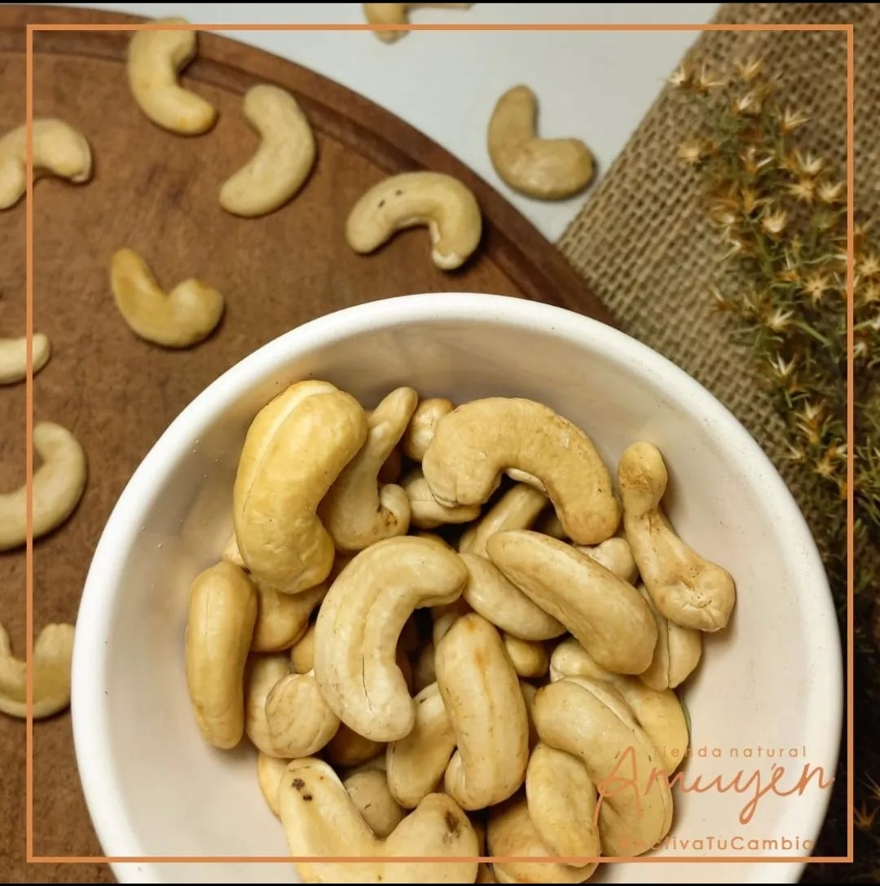
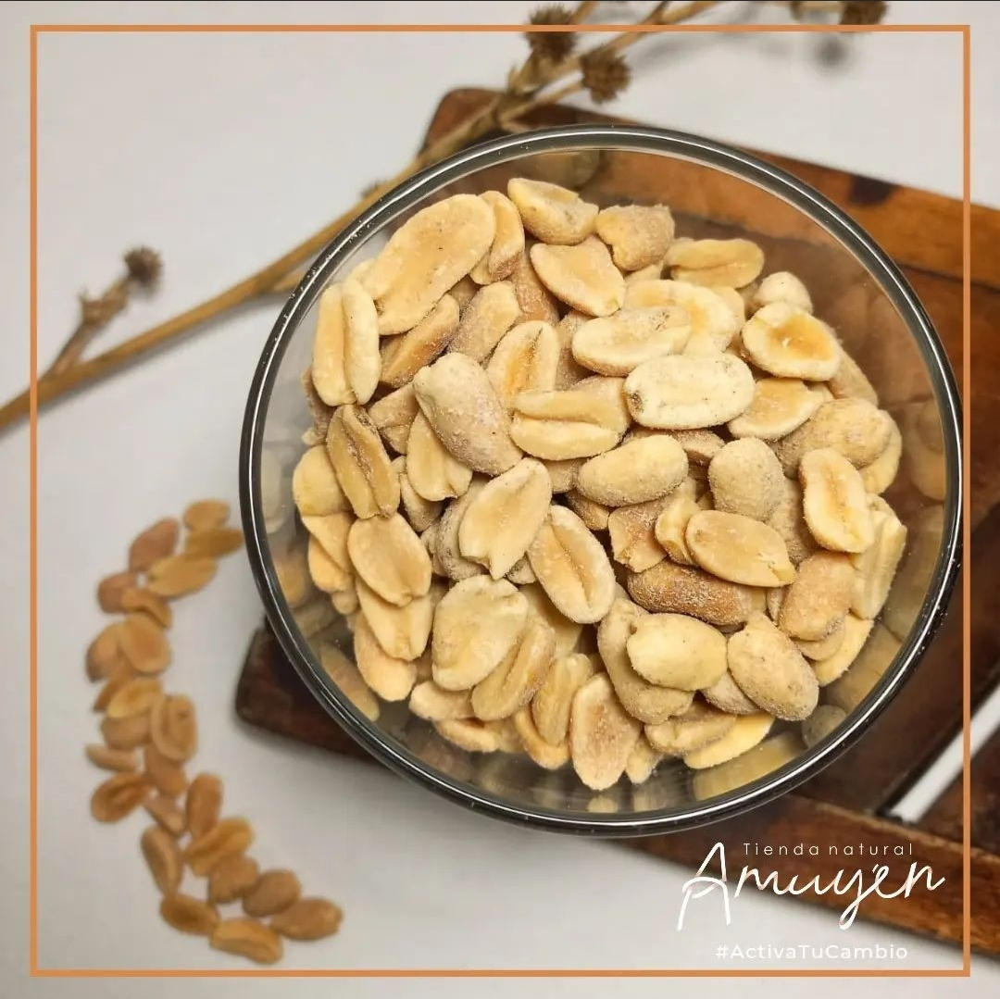

Productos destacados
Nueces
|
Cereales |
Frutos Secos
|
Harinas
|
Nueces

|
Almendras
|
Frutos Secos

|
Harinas
|
¿Qué beneficios y nutrientes aportan los frutos secos?
Los frutos secos son un grupo alimentario muy interesante a
nivel nutricional ya que contienen múltiples nutrientes que le
confieren propiedades cardioprotectoras (antihipertensivas,
reducción del colesterol, sangre más fluida), antioxidantes y
antiinflamatorias a la vez que poseen un alto poder saciante y
previenen el estreñimiento. Por todo esto, son muy interesantes
para complementar el aporte total diario de grasas junto con el
poder del aceite de oliva virgen extra, grasa por excelencia de
nuestra dieta mediterránea".
¿Cuáles son los frutos secos más saludables? ¿Y cuáles son los menos saludables?
“En general, todos los frutos secos tienen un buen perfil nutricional. Aunque sí que es cierto que deberíamos evitar los que tienen un procesado adicional como los fritos con sal añadida, ya que se suelen freír con aceites de mala calidad como el de girasol. También hay que tener en cuenta el estado de conservación de los frutos secos, ya que pueden oxidarse o enranciarse con el tiempo por efecto del oxígeno, luz solar y temperaturas elevadas. Si desprenden un olor enranciado, estos no deberían consumirse”.
¿Cuántos frutos secos podemos comer al día?
Hay que tener en cuenta que el tamaño de las porciones puede variar mucho, no es lo mismo consumir 100 calorías de pistachos (unos 25) que de nueces (solo 8). Y otra gran ventaja de este alimento es que es fácil de comer: es pequeño, viene bien envasado, no mancha y puedes tener una bolsa de nueces, pistachos, almendras...o incluso una mezcla de todos, en la cajonera de la oficina o en ese estante de la cocina que atacas
¿Cuáles son los frutos secos más calóricos y cuáles menos?
“En general, el aporte calórico del fruto seco es bastante elevado (alrededor de 600Kcal/100g de media) y varia muy poco entre ellos, oscilando entre 570 kcal (cacahuete crudo) hasta las 680 kcal (piñón). Aunque sí que hay una variedad que despunta por encima del resto por ser la menos calórica con diferencia: esta es la castaña con tan solo 175 kcal/100g. Y el motivo es que tiene un mayor contenido en agua (51%) y en carbohidratos (36%) aportando muy poca grasa (2%)".
¿Cuáles son los frutos secos más calóricos y cuáles menos?
“En general, el aporte calórico del fruto seco es bastante elevado (alrededor de 600Kcal/100g de media) y varia muy poco entre ellos, oscilando entre 570 kcal (cacahuete crudo) hasta las 680 kcal (piñón). Aunque sí que hay una variedad que despunta por encima del resto por ser la menos calórica con diferencia: esta es la castaña con tan solo 175 kcal/100g. Y el motivo es que tiene un mayor contenido en agua (51%) y en carbohidratos (36%) aportando muy poca grasa (2%)".
¿Cuáles son los frutos secos más calóricos y cuáles menos?
“En general, el aporte calórico del fruto seco es bastante elevado (alrededor de 600Kcal/100g de media) y varia muy poco entre ellos, oscilando entre 570 kcal (cacahuete crudo) hasta las 680 kcal (piñón). Aunque sí que hay una variedad que despunta por encima del resto por ser la menos calórica con diferencia: esta es la castaña con tan solo 175 kcal/100g. Y el motivo es que tiene un mayor contenido en agua (51%) y en carbohidratos (36%) aportando muy poca grasa (2%)".